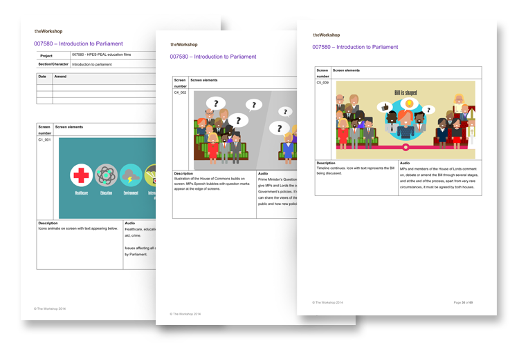

The Houses of Parliament wanted a flexible educational video to give young people a taste of how Parliament and the UK election system work. I went down to Westminster to meet the education team and discuss an approach. The film had to reach a wide demographic of 7-16 year olds, and so we recommended making two films – one for a primary school audience, and the other for secondary school children to better target these distinct age groups. I researched the subject and worked closely with the client to develop a narrative, script and storyboards for each film.

A short prototype was developed, which I took out to test in two local schools with a group of 7-11 year olds, and a group of 14-16 year olds. Using qualitative and quantitative methods, each group was asked a series of pre-defined questions to gauge opinion on film duration, level of information, visual appearance, and voiceover tone. A short 'quiz' at the end tested cognition and learning outputs.
From this research, each film was developed and segmented into six clips that could be viewed individually or as a whole, to give teachers greater flexibility when planning lessons. I worked with an interaction designer to put visuals and animation to the script, which went through a series of client revisions before the final version was successfully launched on the Parliament's Education Service website.
View the video for secondary students on the Houses of Parliament website »
Client: Houses of Parliament
Date: May 2014
Tag: user research, story boarding, script writing